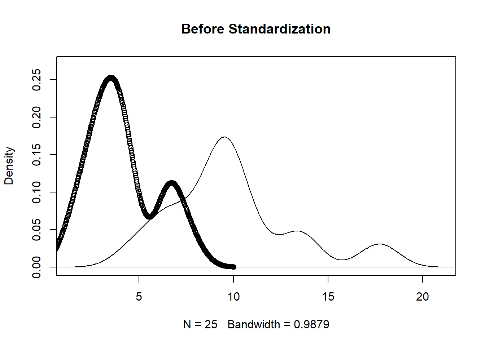
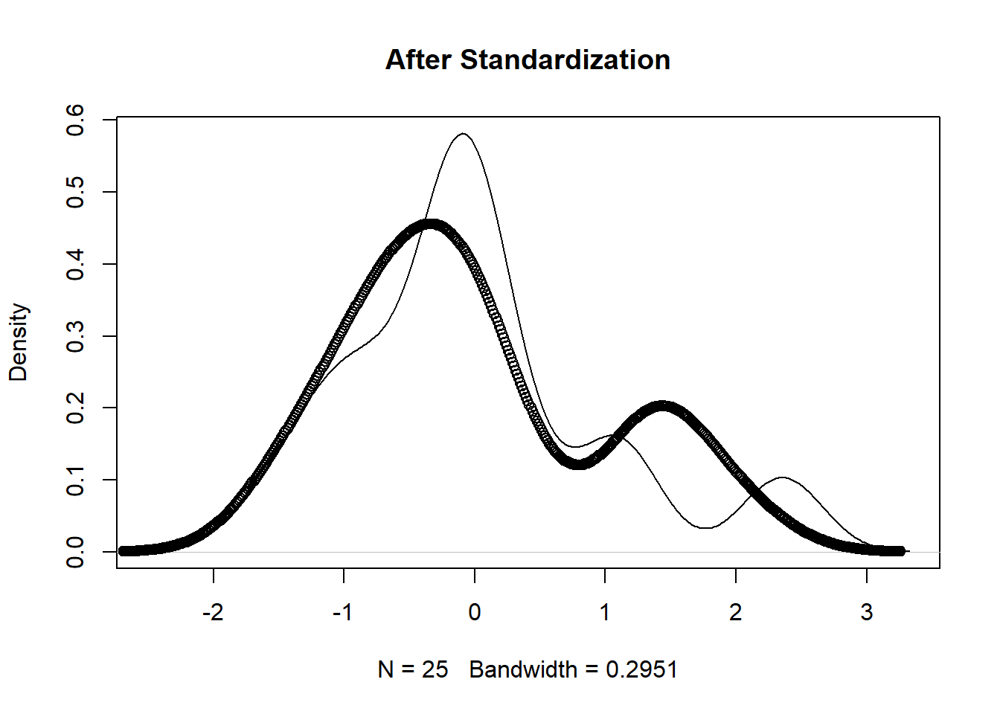
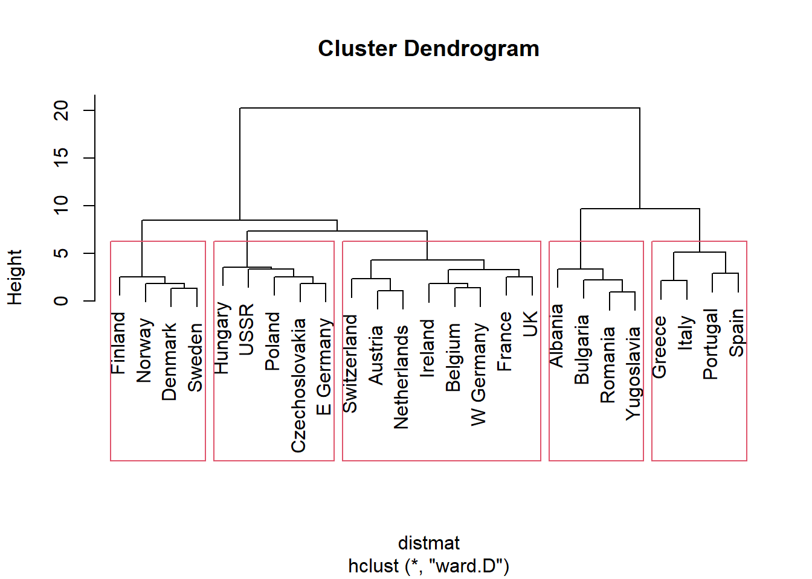
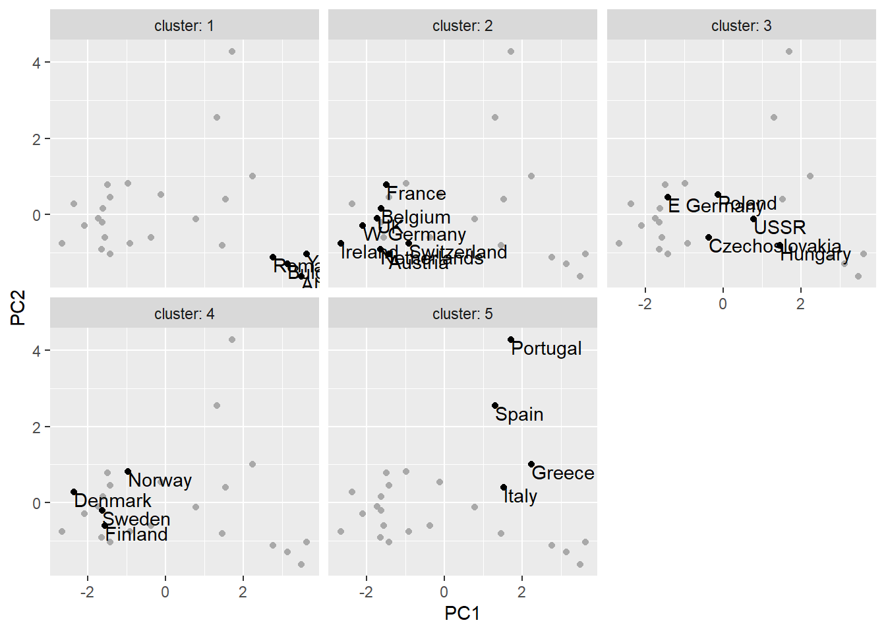

In this chapter we aim to uncover unknown relationships in the data. There will be no outcome that we are trying to predict, instead we will focus on finding relationships and patterns in the data we may have not previously considered. We will use what is known as unsupervised methods. More specifically, we will discuss two types of unsupervised methods: cluster analysis – finding groups with similar characteristics – and association rule mining – finding elements in the data that tend to occur together.
Cluster analysis, as the name suggests, groups observations so that data in the cluster/group is more similar to other data points in the same cluster than to data points in other clusters. For example, we could group tourists according to what kind of vacations they like. Such information is useful not only in advertising but also in tailoring the services to its customers.
Hierarchical clustering finds nested groups. It finds large groups of similar data and within more specific groups.
k-means clustering partitions observations into k number of clusters so that observations belong to a cluster with the nearest mean.
To partition data into groups or clusters you need a way to measure similarity between observations. Most popular way to do it is to measure the distance. Points close to each other are similar, far away from each other – different. There are multiple ways to measure distance. We will discuss Euclidean distance, Hamming distance, Manhattan distance and Cosine similarity.
When data is real-valued, using squared Euclidean distance makes sense.
Hamming distance is used when we are faced with categorical variables. One could define a value if the categories are similar (say, =1), and if not (=0). One could also convert categories into multiple separate binary variables, and convert ordered categories into numerical values to be able to use Euclidean distance.
Sometimes Manhattan or city block distance is appropriate to compute. Also known as L1 distance, it computes the non-diagonal distance. It sums the absolute difference along each axis.
In text analysis, cosine similarity metric, which measures the smallest angles between two vectors, can be used.
a=c(1,1);
b=c(3,5);
Euclidean_distance = sqrt( (a[1]-b[1])^2 + (a[2]-b[2])^2 )
Manhattan_distance = sum( abs(a[1]-b[1]) + abs(a[2]-b[2]) )Let’s load a 1973 dataset on protein consumption from nine different food groups in 25 European countries. We will try to group countries based on their protein consumption.
protein = read.table("R_data_files/protein.txt", sep = "\t", header=TRUE)
summary(protein)## Country RedMeat WhiteMeat Eggs
## Length:25 Min. : 4.400 Min. : 1.400 Min. :0.500
## Class :character 1st Qu.: 7.800 1st Qu.: 4.900 1st Qu.:2.700
## Mode :character Median : 9.500 Median : 7.800 Median :2.900
## Mean : 9.828 Mean : 7.896 Mean :2.936
## 3rd Qu.:10.600 3rd Qu.:10.800 3rd Qu.:3.700
## Max. :18.000 Max. :14.000 Max. :4.700
## Milk Fish Cereals Starch
## Min. : 4.90 Min. : 0.200 Min. :18.60 Min. :0.600
## 1st Qu.:11.10 1st Qu.: 2.100 1st Qu.:24.30 1st Qu.:3.100
## Median :17.60 Median : 3.400 Median :28.00 Median :4.700
## Mean :17.11 Mean : 4.284 Mean :32.25 Mean :4.276
## 3rd Qu.:23.30 3rd Qu.: 5.800 3rd Qu.:40.10 3rd Qu.:5.700
## Max. :33.70 Max. :14.200 Max. :56.70 Max. :6.500
## Nuts Fr.Veg
## Min. :0.700 Min. :1.400
## 1st Qu.:1.500 1st Qu.:2.900
## Median :2.400 Median :3.800
## Mean :3.072 Mean :4.136
## 3rd Qu.:4.700 3rd Qu.:4.900
## Max. :7.800 Max. :7.900In machine learning, it is often ideal to have a unit of change in each coordinate/variable to represent the same degree of difference. One way to do so is to convert all variables in a way that each would have a mean of zero and a standard deviation of 1. This is called standardization.
The unscaled version (first figure below) shows that the protein supplied by vegetables and red meat have different ranges. The scaled version (second figure below) has similar ranges which makes for easier comparison.
vars_to_use <- colnames(protein)[-1]
pmatrix <- scale(protein[, vars_to_use])
pcenter <- attr(pmatrix, "scaled:center")
pscale <- attr(pmatrix, "scaled:scale")
rm_scales <- function(scaled_matrix) {
attr(scaled_matrix, "scaled:center") <- NULL
attr(scaled_matrix, "scaled:scale") <- NULL
scaled_matrix
}
pmatrix <- rm_scales(pmatrix)
plot(density(protein[,2]), main='Before Standardization',ylim=c(0,0.27))
points(density(protein[,10]))
plot(density(pmatrix[,1]), main='After Standardization')
points(density(pmatrix[,9]))
For hierarchical clustering (grouping into larger groups and within to smaller sub-groups) we can use function hclust(). Clustering using hclust() is based on distances between data, measured by function dist(). To compute Eucliddean, Manhattan, and binary (type of Hamming), in dist() you need to specify type=“euclidean”, type=“manhattan” or type=“binary”, respectively. hclust() requires you to indicate clustering method. Let’s use Ward’s method which start each data point as its own cluster and then merges clusters to minimize within sum of squares. We will visually clusters using a dendogram/tree and a point plot (using ggplot2).
We can see that cluster 2 is made of countries with higher-than-average meat consumption, cluster 3 - higher-than-average fish but low vegetable consumption, cluster 5 - high fish and produce consumption.
It is sometimes easier to visualize data. However, when we have more than 2 dimensions, visualization can be tricky. In this case, Principal Component Analysis (PCA) can help. It describes the hyperellipsoid in all dimensions of the data that roughly bounds the data. The first two principal components describe a plane in N-space (N being the number of variables) that captures as much of the variation of the data as can be captured in two dimensions. Below you see a visualization using PCA.
distmat <- dist(pmatrix, method = "euclidean")
pfit <- hclust(distmat, method = "ward.D")
plot(pfit, labels = protein$Country)
rect.hclust(pfit, k=5)
groups <- cutree(pfit, k = 5)
library(ggplot2)
princ <- prcomp(pmatrix)
nComp <- 2
project <- predict(princ, pmatrix)[, 1:nComp]
project_plus <- cbind(as.data.frame(project),
cluster = as.factor(groups),
country = protein$Country)
ggplot(project_plus, aes(x = PC1, y = PC2)) +
geom_point(data = as.data.frame(project), color = "darkgrey") +
geom_point() +
geom_text(aes(label = country),
hjust = 0, vjust = 1) +
facet_wrap(~ cluster, ncol = 3, labeller = label_both)
print_clusters = function(data, groups, columns) {
groupedD = split(data, groups)
lapply(groupedD,
function(df) df[, columns])
}
cols_to_print = wrapr::qc(Country, RedMeat, Fish, Fr.Veg)
print_clusters(protein, groups, cols_to_print)## $`1`
## Country RedMeat Fish Fr.Veg
## 1 Albania 10.1 0.2 1.7
## 4 Bulgaria 7.8 1.2 4.2
## 18 Romania 6.2 1.0 2.8
## 25 Yugoslavia 4.4 0.6 3.2
##
## $`2`
## Country RedMeat Fish Fr.Veg
## 2 Austria 8.9 2.1 4.3
## 3 Belgium 13.5 4.5 4.0
## 9 France 18.0 5.7 6.5
## 12 Ireland 13.9 2.2 2.9
## 14 Netherlands 9.5 2.5 3.7
## 21 Switzerland 13.1 2.3 4.9
## 22 UK 17.4 4.3 3.3
## 24 W Germany 11.4 3.4 3.8
##
## $`3`
## Country RedMeat Fish Fr.Veg
## 5 Czechoslovakia 9.7 2.0 4.0
## 7 E Germany 8.4 5.4 3.6
## 11 Hungary 5.3 0.3 4.2
## 16 Poland 6.9 3.0 6.6
## 23 USSR 9.3 3.0 2.9
##
## $`4`
## Country RedMeat Fish Fr.Veg
## 6 Denmark 10.6 9.9 2.4
## 8 Finland 9.5 5.8 1.4
## 15 Norway 9.4 9.7 2.7
## 20 Sweden 9.9 7.5 2.0
##
## $`5`
## Country RedMeat Fish Fr.Veg
## 10 Greece 10.2 5.9 6.5
## 13 Italy 9.0 3.4 6.7
## 17 Portugal 6.2 14.2 7.9
## 19 Spain 7.1 7.0 7.2A researcher should check if the clusters created by the algorithm represent structure in the data or are some kind of artifact of the algorithm. Bootstrap resampling allows you to evaluate how stable a cluster is to possible variation in the data. Cluster stability is measured using Jaccard coefficient which measures similarity between sets. Typically, a value below 0.5 indicates that the cluster dissolved and is probably not showing any real structure in the data. A value between 0.6 and 0.75 indicates that the cluster is showing some pattern in the data but with low certainty. A coefficient of 0.85 and above is regarded as highly stable and most likely representing some real structure in the data.
library(fpc)
kbest_p <- 5
cboot_hclust <- clusterboot(pmatrix, clustermethod = hclustCBI, method = "ward.D", k = kbest_p);
summary(cboot_hclust$result)
groups <- cboot_hclust$result$partitionprint_clusters(protein, groups, cols_to_print)## $`1`
## Country RedMeat Fish Fr.Veg
## 1 Albania 10.1 0.2 1.7
## 4 Bulgaria 7.8 1.2 4.2
## 18 Romania 6.2 1.0 2.8
## 25 Yugoslavia 4.4 0.6 3.2
##
## $`2`
## Country RedMeat Fish Fr.Veg
## 2 Austria 8.9 2.1 4.3
## 3 Belgium 13.5 4.5 4.0
## 9 France 18.0 5.7 6.5
## 12 Ireland 13.9 2.2 2.9
## 14 Netherlands 9.5 2.5 3.7
## 21 Switzerland 13.1 2.3 4.9
## 22 UK 17.4 4.3 3.3
## 24 W Germany 11.4 3.4 3.8
##
## $`3`
## Country RedMeat Fish Fr.Veg
## 5 Czechoslovakia 9.7 2.0 4.0
## 7 E Germany 8.4 5.4 3.6
## 11 Hungary 5.3 0.3 4.2
## 16 Poland 6.9 3.0 6.6
## 23 USSR 9.3 3.0 2.9
##
## $`4`
## Country RedMeat Fish Fr.Veg
## 6 Denmark 10.6 9.9 2.4
## 8 Finland 9.5 5.8 1.4
## 15 Norway 9.4 9.7 2.7
## 20 Sweden 9.9 7.5 2.0
##
## $`5`
## Country RedMeat Fish Fr.Veg
## 10 Greece 10.2 5.9 6.5
## 13 Italy 9.0 3.4 6.7
## 17 Portugal 6.2 14.2 7.9
## 19 Spain 7.1 7.0 7.2cboot_hclust$bootmean## [1] 0.8186667 0.7763651 0.6813810 0.8857024 0.7613333cboot_hclust$bootbrd## [1] 19 20 39 14 31References
Zumel, N., & Mount, J. (2014). Practical Data Science With R. Manning Publications Co.